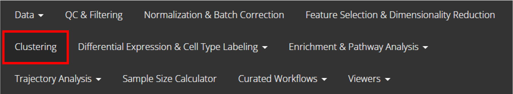
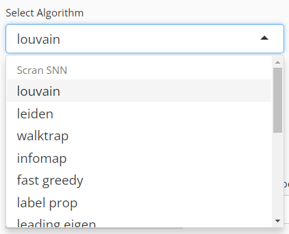
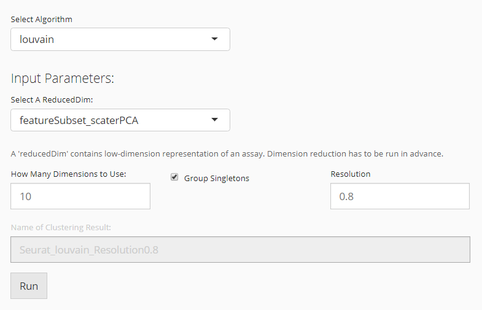
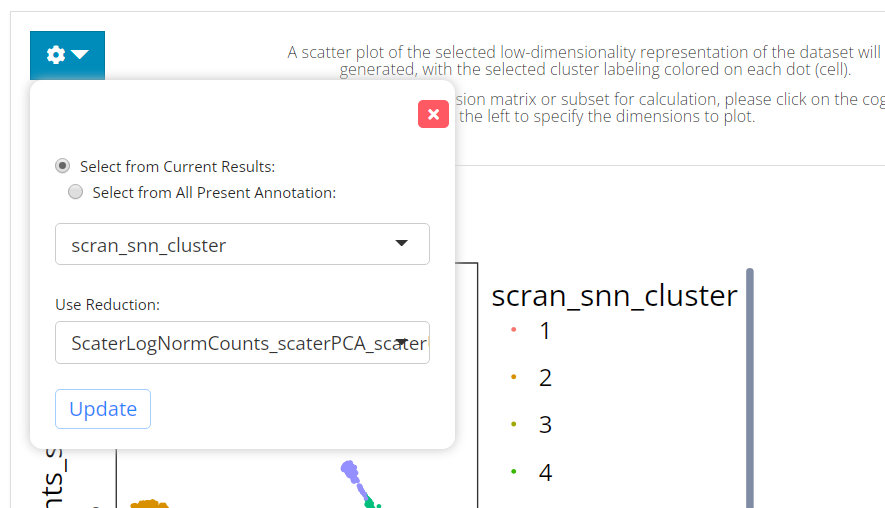

Introduction
SCTK allows users to do clustering on their data. The clustering methods that SCTK adopts are mainly graph based, such as an SNN graph, supported by Scran [1], or a KNN graph, supported by Seurat [2]. Meanwhile, we also support traditional method such as K-Means [3].
SCTK allows different types data matrix as input. When using Scran’s SNN graph based clustering algorithms, users can specify either a expression matrix or a low-dimension representation as the input, while for Seurat’s KNN graph based algorithms and K-Means, users can only use the reduced dimensions.
To view detailed instructions on how to use these methods, please select ‘Interactive Analysis’ for using clustering methods in shiny application or ‘Console Analysis’ for using these methods on R console from the tabs below:
Workflow Guide
Entry of The Panel
From anywhere of the UI, the panel for clustering can be accessed from the top navigation panel at the circled tab shown below.

The UI is includes two panels. The top one is for setting the parameters and run the clustering, while the bottom one is for visualizing the results.
Run Clustering
1. Choose An Algorithm

User will choose an algorithm to run the clustering at the very first step. The slide-down option list is constructed in a grouped style. Each group lists all the algorithm that a dependency (shown with grey text) supports. By selecting an algorithm that belongs to different groups, the parameter settings will change.
2. Parameter Settings
Method specific parameter settings can be viewed below:
Scran SNNs

When the selected algorithm belongs to “Scran SNN” group, the parameter settings will look like the figure above. For the choices in the algorithm list, please refer to igraph::cluster_walktrap(), igraph::cluster_louvain(), igraph::cluster_infomap(), igraph::cluster_fast_greedy(), igraph::cluster_label_prop(), and igraph::cluster_leading_eigen().
- Data matrix selection - selection input “Select Input Matrix”. Scran SNN method allows various types of data matrices. Either a full-sized or a subsetted expression matrix, technically called
assayoraltExp, respectively, or a reduced dimension, technicallyreducedDim, is allowed. - Resolution setting - numeric input “K value”.
Kis an integer scalar specifying the number of nearest neighbors to consider during graph construction. Considering more neighbors results in larger groups. (See parameterkofscran::buildSNNGraph()) - Algorithm detail setting - selection input “Edge Weight Type”. Users can specify the type of weighting scheme to use for shared neighbors. (See parameter
typeofscran::buildSNNGraph()) - Component number setting (only used when the chosen data matrix is an
assayoraltExp) - numeric input “Number of Components”. When anassayoraltExpis chosen, the algorithm will perform a PCA on the matrix and obtain the top principal components (PCs) for downstream use. Thus users will specify the number of PCs here.
K-Means

When the selected algorithm belongs to “K-Means” group, the parameter settings will look like the figure above.
- Data matrix selection - selection input “Select a ReducedDim”. Here the data matrix allowed can only be a reduced dimension, technically called
reducedDimand should be obtained in advance from “Feature Selection & Dimensionality Reduction” tab. - Cluster number determining - numeric input “Number of Centers (Clusters)”. User will decide the exact number of clusters here. In term of K-means algorithm, the number of cluster centroids.
- Iteration limit setting - numeric input “Max Number of Iterations”. User will here decide the maximum number of iterations to run.
- Algorithm detail setting - numeric input “Number of Random Sets”. Kmeans attempts multiple initial configurations and reports on the best one. Here users will set the number of initial configurations to use.
Seurat

When the selected algorithm belongs to “Seurat” group, the parameter settings will look like the figure above.
- Data matrix selection - selection input “Select a ReducedDim”. Here the data matrix allowed can only be a reduced dimension, technically called
reducedDimand should be obtained in advance from “Feature Selection & Dimension Reduction” tab. - Component number setting - numeric input “How Many Dimensions to Use”.
- Algorithm detail setting - checkbox input “Group Singletons”.
- Resolution setting - numeric input “Resolution”.
3. Visualization

The visualization is implemented with a plotting of a chosen low-dimension embedding, colored with a chosen cluster assignment (the newly generated result by default). SCTK by default uses the matrix used for clustering calculation for the visualization. However, usually, users might use a PCA for clustering while needing a UMAP/t-SNE embedding for visualization. To change the embedding used, please click on the blue settings (cog) button on the left-top corner.
Settings
- Cluster annotation selection - radio button selection “Select from Current Results” and “Select from All Present Annotation”. This selection updates the dropdown menu with the available annotations. Only a successful run of clustering in the current SCTK session adds an option for the new result to “Select from Current Results,” while all the cell annotation stored in background (i.e.
colData(sce)) are accessible if “Select from All Present Annotation” is chosen. - Dimension Reduction selection - selection input “Use Reduction”. User have to choose a reduction here for plotting. If there is not yet any option, user can obtain one from “Feature Selection & Dimension Reduction” tab.
The clustering methods mentioned in the Introduction can be easily applied to any preprocessed SCE object. Meanwhile, there are other types of clustering methods supported by SCTK, but usually dependent to a curated workflow, such as celda. Here we present the usage of the three functions only.
Basic Parameters
For each of the three functions, the common things are:
- The input SCE object -
inSCE. - The
colDatacolumn name to save the cluster labels -clusterName - The specific algorithm type supported by the dependency -
algorithm
As for another essential parameter, the data matrix used for running the algorithm is a must. Here, users should notice that:
- For
runKMeans(), only a dimension reduction is acceptable. Users need to useuseReducedDimto pass the argument. - For
runScranSNN(), either a feature expression matrix or a dimension reduction is acceptable. Users need to useuseAssayfor a full-sized expression data (assay),useAltExpandaltExpAssayfor a subsetted expression data (altExp), oruseReducedDimfor a dimension reduction. - For
runSeuratFindClusters(), it is included within the Seurat Curated Workflow, yet usable as an independent function. However, it will be complicated to use this way. It is recommended to invoke the Seurat clustering functionality in the UI since it is automated there. We will still present the complicated workflow later.
Other parameters are method specific, please refer to the function manual pages for the detail.
Example
To demonstrate simple and clear examples, here we use the “PBMC-3k” dataset from “10X” which can be easily imported with SCTK functions.
library(singleCellTK)
sce <- importExampleData("pbmc3k")The preprocessing only includes necessary steps before getting cluster labels (i.e. QC and filtering are excluded).
Preprocessing
sce <- scaterlogNormCounts(sce, "logcounts")
# Go through the Seurat curated workflow to get basic scaled assay and dimension reduction
sce <- runSeuratNormalizeData(inSCE = sce, useAssay = "counts")
sce <- runSeuratFindHVG(inSCE = sce, useAssay = "seuratNormData")
sce <- runSeuratScaleData(inSCE = sce, useAssay = "seuratNormData")
sce <- runSeuratPCA(inSCE = sce, useAssay = "seuratScaledData")
# Optional visualization
sce <- runSeuratUMAP(pbmc3k)
plotSCEDimReduceColData(inSCE = sce, colorBy = "Sample", reducedDimName = "seuratUMAP")Example with Scran SNN
Method specific parameters
-
k, the number of nearest neighbors used to construct the graph. Smaller value indicates higher resolution and larger number of clusters. -
nComp, the number of components to use whenuseAssayoruseAltExpis specified. WON’T work withuseReducedDim. - For
weightTypeandalgorithm, users should choose from a given list of options, which can be found with?runScranSNN. For the introduction of those options, please refer toscran::buildSNNGraph()andigraph.
# Directly use an assay
sce <- runScranSNN(inSCE = sce, useAssay = "logcounts", k = 10, clusterName = "scranSNN_logcounts")
plotSCEDimReduceColData(inSCE = sce, colorBy = "scranSNN_logcounts", conditionClass = "factor", reducedDimName = "seuratUMAP")
# Directly use a dimension reduction
sce <- runScranSNN(inSCE = sce, useReducedDim = "seuratUMAP", k = 25, clusterName = "scranSNN_seuratUMAP")
plotSCEDimReduceColData(inSCE = sce, colorBy = "scranSNN_seuratUMAP", conditionClass = "factor", reducedDimName = "seuratUMAP")
# Use a subset of an assay
hvg <- getTopHVG(sce, "vst", n = 500)
ae <- SingleCellExperiment(assays = list(logcounts = logcounts(sce[hvg,])))
altExp(sce, "subset") <- ae
sce <- runScranSNN(inSCE = sce, useAltExp = "subset", altExpAssay = "logcounts", k = 8, clusterName = "scranSNN_altExp")
plotSCEDimReduceColData(inSCE = sce, colorBy = "scranSNN_altExp", conditionClass = "factor", reducedDimName = "seuratUMAP")Example with K-Means
Method specific parameters
-
nCenters, the number of final clusters. This is required. -
nIter, the maximum number of iterations allowed. -
nStart, the number of random sets to choose. Since K-Means is an algorithm with reasonable randomness, the function allows attempting multiple initial configurations and reports on the best one. -
seed, The seed for the random number generator. - For
algorithm, users should choose from a given list of options, which can be found with?runKMeans. For the introduction of those options, please refer to?stats::kmeans.
sce <- runKMeans(inSCE = sce, useReducedDim = "seuratUMAP", nCenters = 13, clusterName = "kmeans_cluster")
plotSCEDimReduceColData(inSCE = sce, colorBy = "kmeans_cluster", conditionClass = "factor", reducedDimName = "seuratUMAP")Example with Seurat
Here we will only present the examples of using runSeuratFindClusters().
sce <- runSeuratFindClusters(inSCE = sce, useAssay = "seuratScaledData")
plotSCEDimReduceColData(inSCE = sce, colorBy = "Seurat_louvain_Resolution0.8", conditionClass = "factor", reducedDimName = "seuratUMAP")When users preprocessed the dataset with other approaches. The clustering with Seurat function can be complicated, since some sorts of Seurat specific metadata is always needed.
# Let's get another totally independent dimension reduction for demonstration.
sce <- scaterPCA(sce, reducedDimName = "PCA")
pca <- reducedDim(sce, "PCA")
rownames(pca) <- gsub("_", "-", rownames(pca))
if ("percentVar" %in% names(attributes(pca))) {
stdev <- as.numeric(attr(pca, "percentVar"))
new_pca <- Seurat::CreateDimReducObject(embeddings = sce, assay = "RNA", stdev = stdev, key = "PC_")
} else {
new_pca <- Seurat::CreateDimReducObject(embeddings = sce, assay = "RNA", key = "PC_")
}
# Then we can take the Seurat Curated Workflow independent dimension
# reduction as an input.
pbmc3k <- runSeuratFindClusters(inSCE = sce, useAssay = assayNames(sce)[1], externalReduction = new_pca, resolution = 0.8)
plotSCEDimReduceColData(inSCE = sce, colorBy = "Seurat_louvain_Resolution0.8", conditionClass = "factor", reducedDimName = "seuratUMAP")